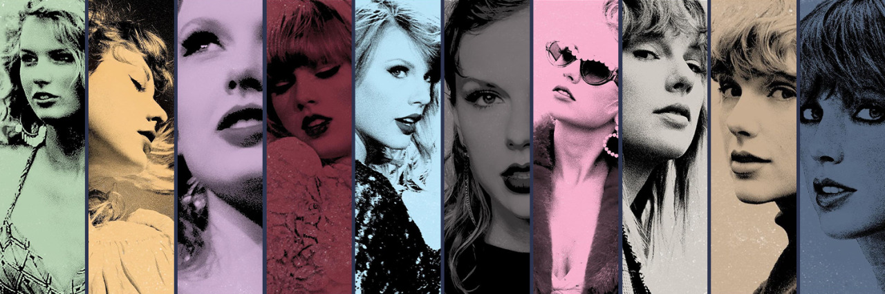
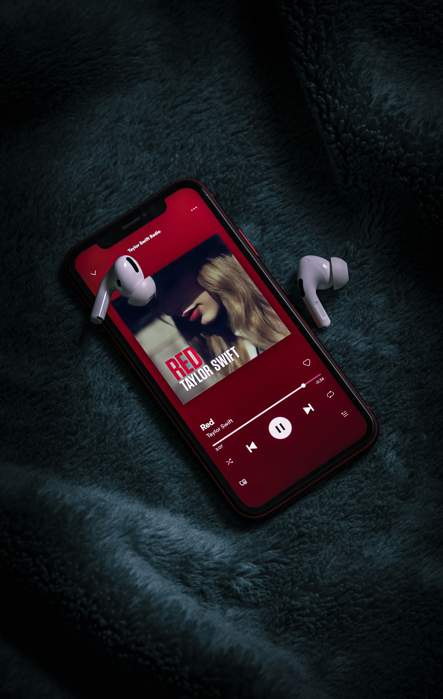
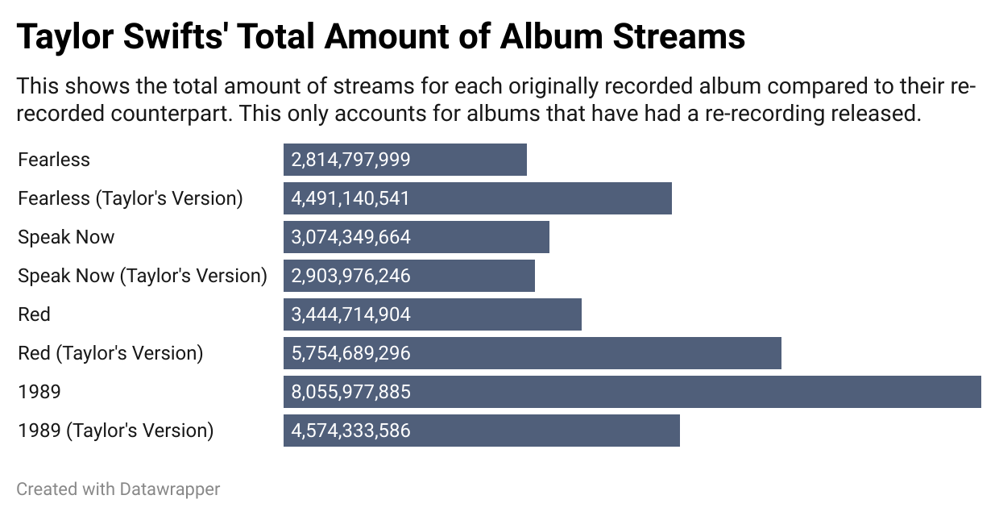

By: Lauren Bentley
Journalism 352
Taylor Swift’s undeniable power and crucially loyal fanbase have driven her stardom from the time she was only fifteen years old. Since then, she has released a plethora of new songs, changed genres and dealt with many instances of very public drama.
She is now fighting to regain control of her production, means and distribution of those original albums from her self-titled “Taylor Swift” debut, to her surprise 2017 release of “Reputation.”
In 2005, Swift was the first artist signed to Big Machine Records, Scott Borchetta’s label, after her family moved to Nashville to help pursue her career in music. From 2005 to 2017, she released her first six studio albums with the label. The contract expired in 2018, but during those years her fame grew exponentially.
The controversy that sparked Swift’s re-recordings started shortly after in 2019, when the label was sold to a well-known music mogul Scooter Braun. Through gaining ownership of the company, Braun also had obtained the rights to all of Swift’s original recordings throughout the years she was signed with Big Machine Records. This includes “Taylor Swift” (2006), “Fearless” (2008), “Speak Now” (2010), “Red” (2012), “1989” (2014) and “Reputation” (2017).
Braun then sold Swift’s original, or master, recordings for $300 million that same year. The recordings are incredibly profitable, and this means that Braun makes a profit whenever the original songs are streamed or bought.
“For years I asked, pleaded for a chance to own my work,” Swift said in an Instagram post. “I had to make the excruciating choice to leave behind my past.”
Swift had hoped to buy her albums back, but was only offered an alternative deal in which she could “earn” each old album for every new one she offered.
In 2018, she joined Universal Music Group/Republic and made a deal which allowed her own masters of all future releases. Although Swift would never own her old masters, she was able to re-record the songs and own those newer versions.
In 2021, she released the first of her re-recordings with “Fearless (Taylor’s Version).”

The original 2012 release of "Red", Swift's fourth studio album. Photo from Unsplash.com
According to Billboard, “Fearless (Taylor’s Version) was released on April 9, 2021 and has earned 1.81 million equivalent album units. In that amount of time, the original version only gained 535,000 equivalent album units.
“Red (Taylor’s Version)” has gotten 3.32 album units since its release date, while the original version only accrued 390,000 equivalent album units in that amount of time.
Additionally, there is also a large discrepancy between the number of total streams and total sales of the original albums compared to Swift’s newly recorded versions.
“Fearless (Taylor’s Version)” has amassed 1.47 billion on-demand song streams by the summer of 2023, as reported by Billboard. The 2008 “Fearless” comparatively has 680.39 million on-demand song streams in that same time period.
The album has also outsold its predecessor since the time of its release as “Fearless (Taylor’s Version)” has sold 737,000 copies compared to the 41,000 copies sold by its original. Similar numbers followed with the release of “Red (Taylor’s Version)” and “Speak Now (Taylor’s Version).”
The most streamed Taylor Swift album currently is “Lover” which is not included in the master recordings obtained by Braun.
All of the Taylor’s Version albums have more daily streams than the originals still owned by Big Machine Records. The data for daily streams was taken on Dec. 3, 2024, but it continuously updated every day.
For example, “1989” has 8,055,977,885 total streams but 2,471,914 daily streams, while “1989 (Taylor’s Version)” has 4,574,333,586 total streams and 4,079,835 daily streams.
Although some of the new albums still currently rank behind the earlier releases, their daily streams demonstrate the possibility of someday surpassing all originally recorded albums. There are also various factors to consider when presenting the number of total streams, as the albums owned by Big Machine Records have each been out many more years than the re-recordings.
Of the albums that have been re-released, results seem to be mixed when it comes to whether the Taylor’s Version outranks the original. “Red (Taylor’s Version)” and "Fearless (Taylor’s Version)” both have more total streams than the original. “Speak Now (Taylor’s Version)” and “1989 (Taylor’s Version)” have fewer total streams than their original counterparts.

Overall, Swift’s versions of her work seem to be outnumbering her originally recorded albums upon their initial releases. There is no doubt that the not-so-simple gesture of recording old tracks to gain back ownership has brought her popularity and praise among her already large fanbase.
Although only half of the Taylor’s Version albums have more total streams than the previous ones, the data demonstrates that every re-recording album beats its counterpart in daily streams by a considerable amount.